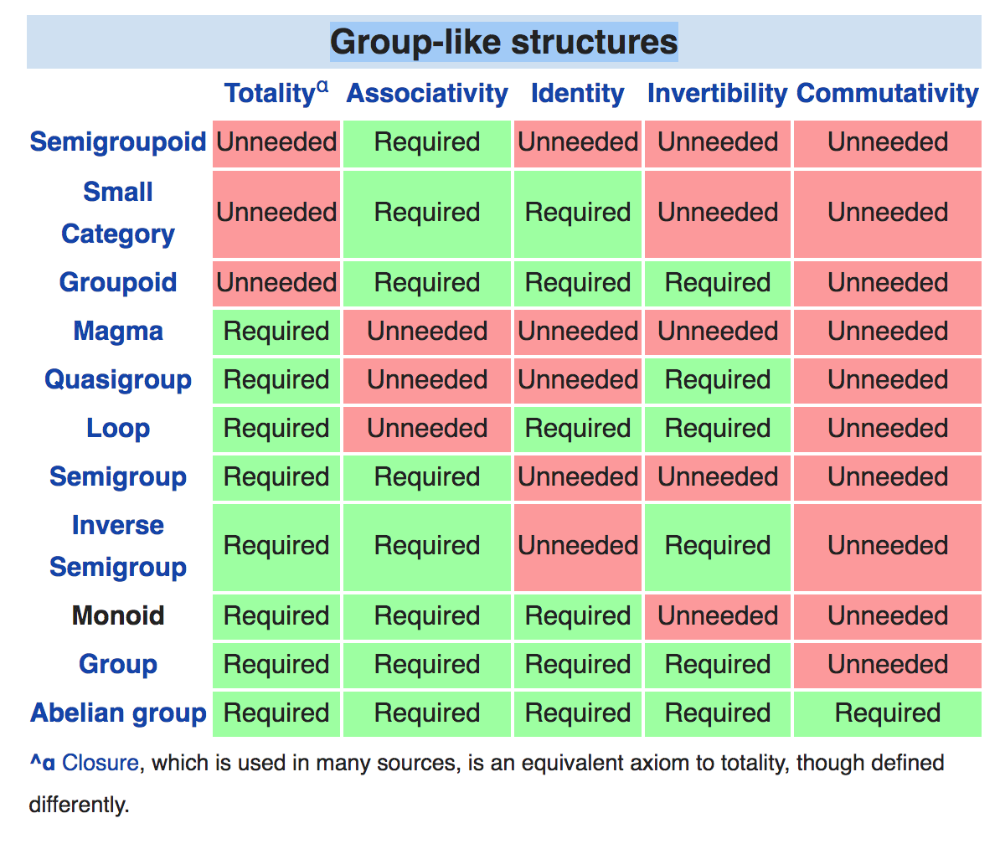
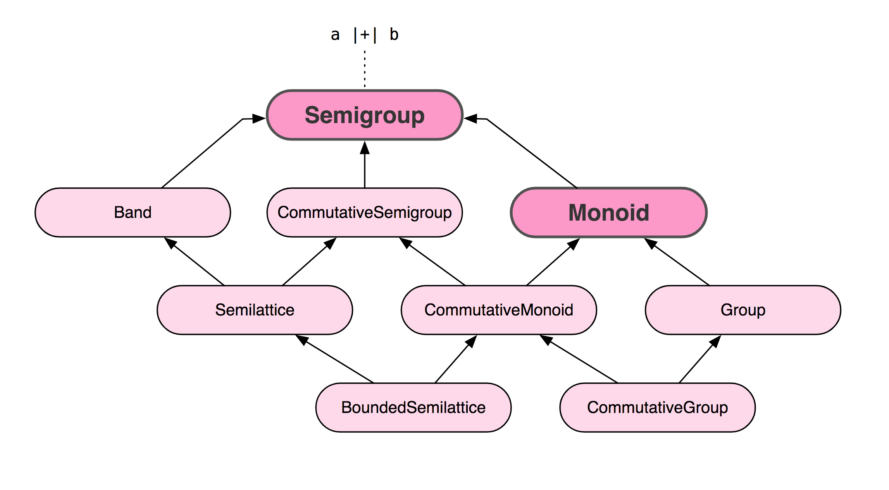
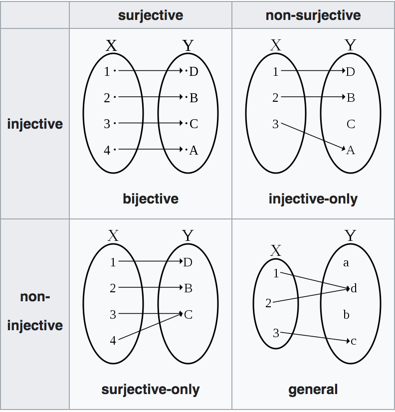
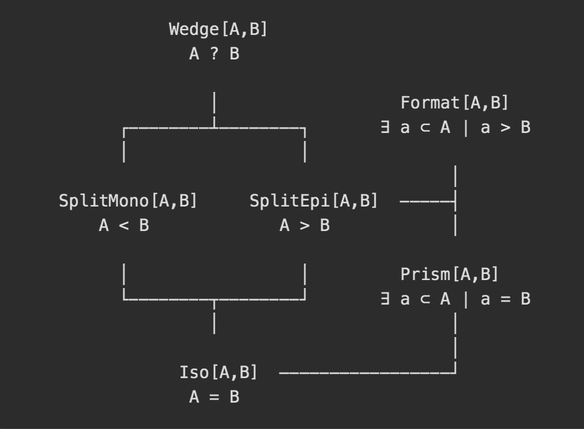

class: center, middle # Equivalence, Laws, Testing Máté László --- # Equality, Equivalence Two objects are considered [equal](https://en.wikipedia.org/wiki/Equality_(mathematics) when everything that's true about one object is true about the other. Two objects are considered [equivalent](https://ncatlab.org/nlab/show/equivalence) if they may be replaced by one another in all contexts under consideration. --- # Equality in Scala Scala inherits its built in equality measure from Java. (`==` and `!=` and `.equals`) It lets us compare things of different types. (Produces inconsistent warnings) ``` scala 42 == "Hello" ^ warning: comparing values of types Int and String using `==` will always yield false res0: Boolean = false ``` ```scala "Hello" == 42 res1: Boolean = false ``` --- # Eq Cats provides an `Eq` typeclass. (`===`, `=!=`) ```scala "Hello" === 42 ^ error: type mismatch; found : Int(42) required: String ``` We can create an Eq instance from the Scala equals method. ```scala implicit val eqFoo: Eq[Foo] = Eq.fromUniversalEquals ``` --- # Eq ``` scala final case class EqLaws[A](eq: Eq[A]) { def reflexivityEq(x: A): IsEq[A] = x <-> x def symmetryEq(x: A, y: A): IsEq[Boolean] = eq.eqv(x, y) <-> eq.eqv(y, x) def antiSymmetryEq(x: A, y: A, f: A => A): IsEq[Boolean] = (!eq.eqv(x, y) || eq.eqv(f(x), f(y))) <-> true def transitivityEq(x: A, y: A, z: A): IsEq[Boolean] = (!(eq.eqv(x, y) && eq.eqv(y, z)) || eq.eqv(x, z)) <-> true } ``` ```scala object EqTests extends Laws { def apply[A: Arbitrary : Eq](eq: Eq[A])(implicit arbF: Arbitrary[A => A]): RuleSet = { val laws = new EqLaws[A](eq) new SimpleRuleSet("Eq", props = "reflexivity" -> forAll(laws.reflexivityEq _), "symmetry" -> forAll(laws.symmetryEq _), "antisymmetry" -> forAll(laws.antiSymmetryEq _), "transitivity" -> forAll(laws.transitivityEq _) ) } } ``` --- # Example: Money ```scala final case class MilliPence(amount: Long) ``` ```scala object MilliPence { implicit val milliPenceEqual: Eq[MilliPence] = Eq.fromUniversalEquals } ``` ```scala MilliPence(300) === MilliPence(250) res3: Boolean = false ``` ```scala MilliPence(300) === MilliPence(300) res4: Boolean = true ``` --- # Law testing - Property based testing - Discipline --- # Example: Increment ```scala final class IncrementSpec extends AnyPropSpec with ScalaCheckDrivenPropertyChecks { def increment(x: Int): Int = x + 1 property("increment is injective (one-to-one)") { forAll { (x: Int, y: Int) => assert(increment(x) != increment(y) || x == y) } } property("∀ x - MaxInt, f(x) > x") { forAll { x: Int => assert(increment(x) > x || x == Int.MaxValue) } } } ``` --- # Example: Money ```scala def +(a: MilliPence): MilliPence = MilliPence(amount + a.amount) val zero = MilliPence(0L) def unary_- : MilliPence = MilliPence(- amount) ``` --- # Group-like structures <figure>  <font size="2"> <figcaption> Source: <a href="https://en.wikipedia.org/wiki/Template:Group-like_structures">Wikipedia</a></figcaption> </font> </figure> --- # Group-like structures <figure>  <font size="2"> <figcaption> Source: <a href="https://github.com/tpolecat/cats-infographic">Rob Norris - Cats infographic</a></figcaption> </font> </figure> --- # Example: Money ```scala implicit val milliPenceAdditionCommutativeGroup: CommutativeGroup[MilliPence] = new CommutativeGroup[MilliPence] { val empty: MilliPence = zero def combine(a: MilliPence, b: MilliPence): MilliPence = a + b def inverse(a: MilliPence): MilliPence = -a } ``` ```scala checkAll("MilliPence-Addition", CommutativeGroupTests[MilliPence].commutativeGroup) [info] - MilliPence-Addition.commutativeGroup.associative [info] - MilliPence-Addition.commutativeGroup.collect0 [info] - MilliPence-Addition.commutativeGroup.combine all [info] - MilliPence-Addition.commutativeGroup.combineAllOption [info] - MilliPence-Addition.commutativeGroup.commutative [info] - MilliPence-Addition.commutativeGroup.consistent inverse [info] - MilliPence-Addition.commutativeGroup.is id [info] - MilliPence-Addition.commutativeGroup.left identity [info] - MilliPence-Addition.commutativeGroup.left inverse [info] - MilliPence-Addition.commutativeGroup.repeat0 [info] - MilliPence-Addition.commutativeGroup.repeat1 [info] - MilliPence-Addition.commutativeGroup.repeat2 [info] - MilliPence-Addition.commutativeGroup.right identity [info] - MilliPence-Addition.commutativeGroup.right inverse ``` --- # Example: Money ```scala implicit val milliPenceAdditionCommutativeGroup: CommutativeGroup[MilliPence] = new CommutativeGroup[MilliPence] { val empty: MilliPence = zero def combine(a: MilliPence, b: MilliPence): MilliPence = a - b def inverse(a: MilliPence): MilliPence = -a } ``` ```scala [info] - MilliPence-Addition.commutativeGroup.associative *** FAILED *** [info] - MilliPence-Addition.commutativeGroup.collect0 [info] - MilliPence-Addition.commutativeGroup.combine all [info] - MilliPence-Addition.commutativeGroup.combineAllOption *** FAILED *** [info] - MilliPence-Addition.commutativeGroup.commutative *** FAILED *** [info] - MilliPence-Addition.commutativeGroup.consistent inverse [info] - MilliPence-Addition.commutativeGroup.is id [info] - MilliPence-Addition.commutativeGroup.left identity *** FAILED *** [info] - MilliPence-Addition.commutativeGroup.left inverse *** FAILED *** [info] - MilliPence-Addition.commutativeGroup.repeat0 [info] - MilliPence-Addition.commutativeGroup.repeat1 [info] - MilliPence-Addition.commutativeGroup.repeat2 [info] - MilliPence-Addition.commutativeGroup.right identity [info] - MilliPence-Addition.commutativeGroup.right inverse *** FAILED *** ``` --- # Example: Money ```scala [info] - MilliPence-Addition.commutativeGroup.associative *** FAILED *** [info] GeneratorDrivenPropertyCheckFailedException was thrown during property evaluation. [info] (Discipline.scala:12) [info] Falsified after 0 successful property evaluations. [info] Location: (Discipline.scala:12) [info] Occurred when passed generated values ( [info] arg0 = MilliPence(1), [info] arg1 = MilliPence(-945376331366539308), [info] arg2 = MilliPence(1692674962907309086) [info] ) [info] Label of failing property: [info] Expected: MilliPence(2638051294273848395) [info] Received: MilliPence(-747298631540769777) ``` --- # Isomorphism, Epimorphism, Monomorphism [Isomorphism](https://ncatlab.org/nlab/show/isomorphism) is the equivalence measure for categories it is also the categorical generalization of bijective functions. An isomorphism is an invertible morphism that is both epic and monic. [Epimorphism](https://ncatlab.org/nlab/show/epimorphism) is the categorical generalization of surjective functions. [Monomorphism](https://ncatlab.org/nlab/show/monomorphism) is the categorical generalization of injective functions. Epi and monomorphisms are duals meaning an epimorphism is a monomorphism in the opposite category. --- # Isomorphism, Epimorphism, Monomorphism <figure>  <font size="2"> <figcaption> Source: <a href="https://en.wikipedia.org/wiki/Bijection,_injection_and_surjection">Wikipedia</a></figcaption> </font> </figure> --- # Iso ```scala final case class Iso[A, B](get: A => B, reverseGet: B => A) ``` ```scala final case class IsoLaws[A, B](iso: Iso[A, B]) { def roundTrip(a: A): IsEq[A] = (iso.get andThen iso.reverseGet)(a) <-> a def roundTripOtherWay(b: B): IsEq[B] = (iso.reverseGet andThen iso.get)(b) <-> b } ``` ```scala object IsoTests extends Laws { def apply[A: Arbitrary : Eq, B: Arbitrary : Eq](iso: Iso[A, B]): RuleSet = { val laws = new IsoLaws(iso) new SimpleRuleSet("Iso", props = "round trip" -> forAll((a: A) => laws.roundTrip(a)), "round trip other way" -> forAll((b: B) => laws.roundTripOtherWay(b)) ) } } ``` --- # Iso ```scala checkAll("Int identity", IsoTests(Iso[Int, Int](identity, identity))) checkAll("Int +-", IsoTests(Iso[Int, Int](_ + 1, _ - 1))) checkAll("List <-> Vector", IsoTests(Iso[List[Int], Vector[Int]](_.toVector, _.toList))) checkAll("List reverse", IsoTests(Iso[List[Int], List[Int]](_.reverse, _.reverse))) checkAll("tuple swap", IsoTests(Iso[(Int, String), (String, Int)](swap, swap))) ``` ```scala [info] - Int identity.Iso.round trip [info] - Int identity.Iso.round trip other way [info] - Int +-.Iso.round trip [info] - Int +-.Iso.round trip other way [info] - List <-> Vector.Iso.round trip [info] - List <-> Vector.Iso.round trip other way [info] - List reverse.Iso.round trip [info] - List reverse.Iso.round trip other way [info] - tuple swap.Iso.round trip [info] - tuple swap.Iso.round trip other way ``` --- # SplitEpi ```scala final case class SplitEpi[A, B](get: A => B, reverseGet: B => A)``` ```scala final case class SplitEpiLaws[A, B](se: SplitEpi[A, B]) { def normalizedRoundTrip(a: A): IsEq[A] = { val aʹ = (se.get andThen se.reverseGet)(a) (se.get andThen se.reverseGet)(aʹ) <-> aʹ } def roundTripOtherWay(b: B): IsEq[B] = (se.reverseGet andThen se.get)(b) <-> b } ``` ```scala object SplitEpiTests extends Laws { def apply[A: Arbitrary : Eq, B: Arbitrary : Eq](se: SplitEpi[A, B]): RuleSet = { val laws = new SplitEpiLaws[A, B](se) new SimpleRuleSet("SplitEpi", props = "normalized round trip" -> forAll((a: A) => laws.normalizedRoundTrip(a)), "round trip other way" -> forAll((b: B) => laws.roundTripOtherWay(b)) ) } } ``` --- # SplitMono ```scala final case class SplitMono[A, B](get: A => B, reverseGet: B => A){ ``` ```scala final case class SplitMonoLaws[A, B](sm: SplitMono[A, B]) { def roundTrip(a: A): IsEq[A] = (sm.get andThen sm.reverseGet)(a) <-> a def normalizedRoundTripOtherWay(b: B): IsEq[B] = { val bʹ = (sm.reverseGet andThen sm.get)(b) (sm.reverseGet andThen sm.get)(bʹ) <-> bʹ } } ``` ```scala object SplitMonoTests extends Laws { def apply[A: Arbitrary : Eq, B: Arbitrary : Eq](sm: SplitMono[A, B]): RuleSet = { val laws = new SplitMonoLaws[A, B](sm) new SimpleRuleSet("SplitMono", props = "round trip" -> forAll((a: A) => laws.roundTrip(a)), "normalized round trip other way" -> forAll((b: B) => laws.normalizedRoundTripOtherWay(b)) ) } } ``` --- # Equivalence optics <figure>  <font size="2"> <figcaption> Source: <a>Rob Norris - Pushing Types and Gazing at the Stars</a></figcaption> </font> </figure> --- # Example: Money ```scala // Max representable amount £ 92,233,720,368,547.75807 // Min representable amount £-92,233,720,368,547.75808 // Precision 1000th of a pence final case class MilliPence(amount: Long) // On maximum scale // Max representable amount £ 32767 * 10^127 // Min representable amount £-32,768 * 10^127 // Precision is very low // On scale 0 // Max representable amount £ 32,767 // Min representable amount £-32,768 // Precision is pounds // On scale -2 // Max representable amount £ 327.67 // Min representable amount £-327.68 // Precision is pence final case class ScaledShort(amount: Short, scale: Byte) // Min representable amount £-327.68 // Max representable amount £ 327.67 // Precision pence final case class PenceShort(amount: Short) ``` --- # Example: Money ```scala lazy val asMilliPence: SplitMono[PenceShort, MilliPence] = SplitMono( ps => MilliPence(ps.amount.toLong * 1000), mp => PenceShort((mp.amount / 1000).toShort)) lazy val asScaledShort: SplitMono[PenceShort, ScaledShort] = SplitMono( ps => ScaledShort(ps.amount, -2), ss => PenceShort((ss.amount * Math.pow(10, ss.scale.toDouble + 2).toShort).toShort)) ``` ```scala checkAll("PenceShort <-> MilliPence", SplitMonoTests(PenceShort.toMilliPence)) checkAll("PenceShort <-> ScaledShort", SplitMonoTests(PenceShort.toScaledShort)) [info] - PenceShort <-> MilliPence.SplitMono.normalized round trip other way [info] - PenceShort <-> MilliPence.SplitMono.round trip [info] - PenceShort <-> ScaledShort.SplitMono.normalized round trip other way [info] - PenceShort <-> ScaledShort.SplitMono.round trip ``` --- # Example: 3rd party API ```scala sealed trait IncomingRequest final case class Request1(...) extends IncomingRequest final case class Request2(...) extends IncomingRequest ... final case class RequestN(...) extends IncomingRequest ``` ```scala final case class ExternalRequest(header: RequestHeader, body: RequestBody) final case class RequestHeader(...) sealed trait RequestBody final case class ExternalRequestBody1(...) extends RequestBody final case class ExternalRequestBody2(...) extends RequestBody ... final case class ExternalRequestBodyN(...) extends RequestBody ``` ```scala lazy val asExternalRequest: SplitMono[IncomingRequest, ExternalRequest] = SplitMono(..., ...) ``` ```scala checkAll("IncomingRequest <-> ExternalRequest", SplitMonoTests(IncomingRequest.asExternalRequest)) [info] - IncomingRequest <-> ExternalRequest.SplitMono.normalized round trip other way [info] - IncomingRequest <-> ExternalRequest.SplitMono.round trip ``` --- # Example: 3rd party API ```scala sealed trait OutgoingResponse final case class Response1(...) extends OutgoingResponse final case class Response2(...) extends OutgoingResponse ... final case class ResponseN(...) extends OutgoingResponse ``` ```scala final case class ExternalResponse(header: ResponseHeader, body: ResponseBody) final case class ResponseHeader(...) sealed trait ResponseBody final case class ExternalResponseBody1(...) extends ResponseBody final case class ExternalResponseBody2(...) extends ResponseBody ... final case class ExternalResponseBodyN(...) extends ResponseBody ``` ```scala lazy val asOutgoingResponse: SplitEpi[ExternalResponse, OutgoingResponse] = SplitEpi(..., ...) ``` ```scala checkAll("ExternalResponse <-> OutgoingResponse", SplitEpiTests(ExternalResponse.asOutgoingResponse)) [info] - ExternalResponse <-> OutgoingResponse.SplitEpi.round trip other way [info] - ExternalResponse <-> OutgoingResponse.SplitEpi.normalized round trip ``` --- # Thanks! - [Rob Norris - Pushing Types and Gazing at the Stars](https://skillsmatter.com/skillscasts/11626-keynote-pushing-types-and-gazing-at-the-stars) - [Julien Truffaut - Types vs Tests](https://skillsmatter.com/skillscasts/12648-types-vs-tests) - [gsp-math](https://github.com/gemini-hlsw/gsp-math) - [monocle](https://github.com/julien-truffaut/Monocle) - [discipline](https://github.com/typelevel/discipline) ## Questions?